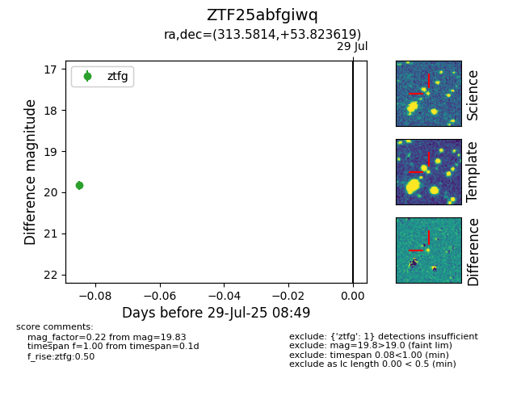

Target ZTF25abfgiwq at 2025-07-29 08:49, see:
FINK: fink-portal.org/ZTF25abfgiwq
Lasair: lasair-ztf.lsst.ac.uk/objects/ZTF25abfgiwq
ALeRCE: alerce.online/object/ZTF25abfgiwq
alt names
ZTF25abfgiwq (ztf,fink)
coordinates:
equatorial (ra, dec) = (313.5814,+53.82362)
galactic (l, b) = (92.2699,+5.72148)
photometry
last ztfg=19.83
1 ztfg detections
